Visual Studio da appsettings.json faylını açmaq
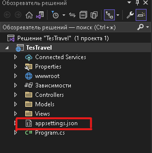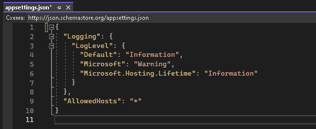
appsettings.json'da DB ilə əlaqə qurmaq
-
Connection'a istenilən bir ad verilir (bizdə - DefaultConnection)
"ConnectionStrings": {"DefaultConnection":}"
-
Data Source'a SQL'in yolunu yazırıq. Bunun üçün SQL-serveri açıb, Serverin property-sindən Serverin adını copy eleyib Data Source a yazırıq
"ConnectionStrings": { "DefaultConnection": "Data Source=ZALADDIN;"}
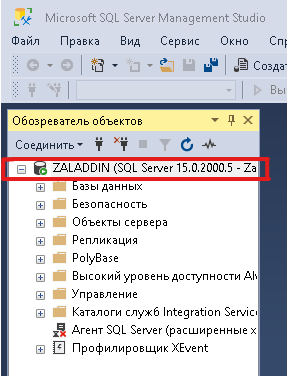
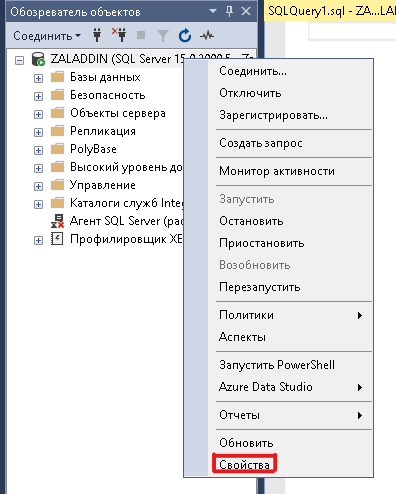
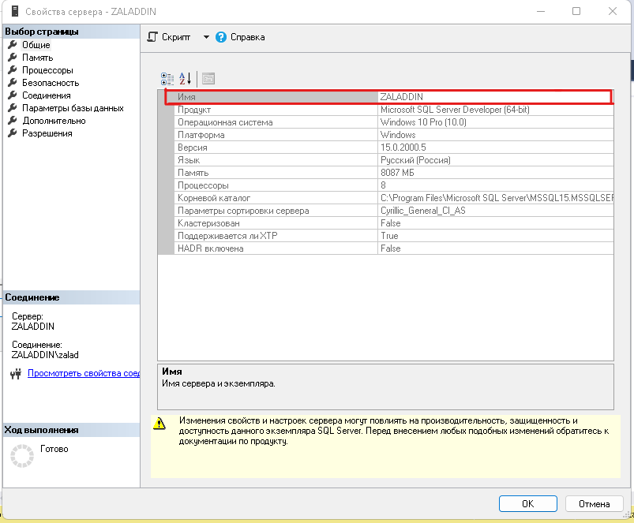
-
DataBase-ə vermək istediyimiz adı Initial Catalog'a yazırıq
"ConnectionStrings": { "DefaultConnection": "Data Source=ZALADDIN; Initial Catalog=ZayDb;"}
-
Integrated Security. DataBase-in təhlükəsizliyi
"ConnectionStrings": { "DefaultConnection": "Data Source=ZALADDIN; Initial Catalog=ZayDb; Integrated Security = SSPI;"}
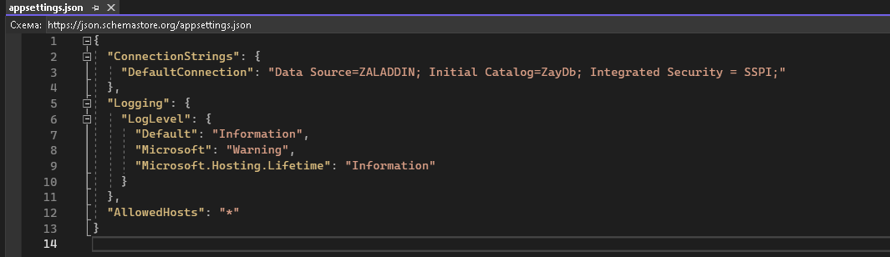
Model papkasın da Category və Product classları yaradmaq
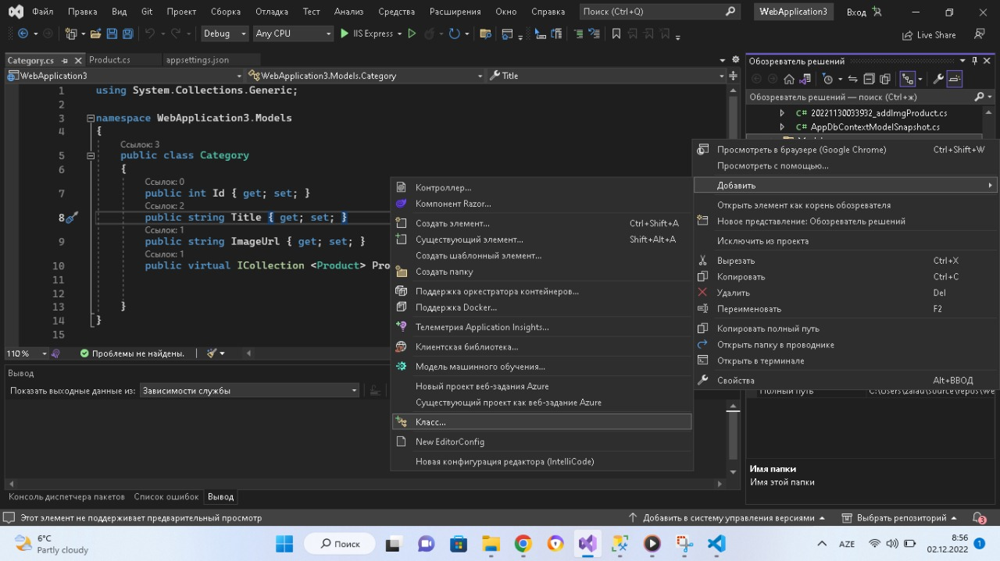-
One-to-Many əlaqəsi qurmaq üçün Product classında Category ilə əlaqə üçün CategoryId dəyişəni və Category tipində Virual Category cədvəl əlavə edirik
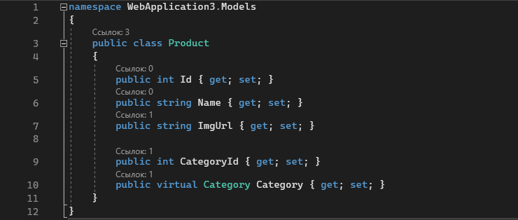
-
Category classında isə çoxluqu bildirmək üçün Product tipində Products Virtual kolleksiya yaradırıq
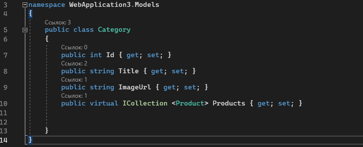
Proyektin icinde Data Application Layer (DAL) papkası yaradılır
-
Bu papkanın içində yalnız DBCONTEXT saxlanılacaq.
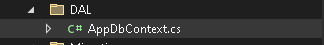
DataBase gondərmək istədiyimiz classları(yəni Table adları) burada qeyd edəcəyik
-
DAL papkasının içində AppDbContext classı yaradıb onu DbContextdən törədirik
-
DbContext-i tanınması üçün using MIcrosoft.EntityFrameWorkCore elemek lazımdır
-
AppDbContext Constructor qurulur
Constructor AppDbContext tipində bizdən DbContextOption option alır.
Bu option isə base ilə göndərilir ana classa -
DataBase gondərmək istədiyimiz classları (Category və Product) DbSet ilə gondəririk
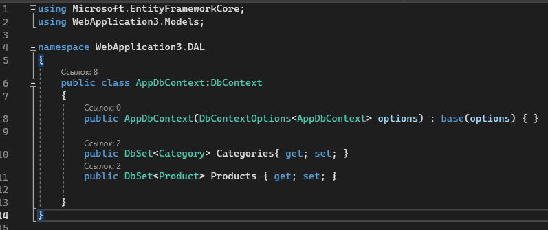
-
Startup.cs faylını açıb servislərə DbContexti əlavə və DAL using edirik
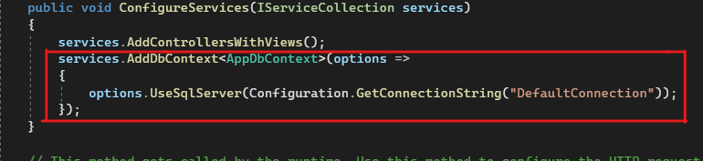
Packages-lərin yüklənməsi
-
Proyektin düzgün işləməsi üçün proyekti yazdığınız ASP.NET-in versiyasına uyğun aşağidakı Packages-ləri köçürmək lazımdır
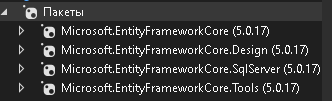
-
Bunun üçün Tools (Средства) -> NuGet Package Manager (Диспетчер пакетов Nuget) -> Manage NuGet Packages for Solution...(Управление пакетами Nuget для решения...) daxil olub axtarış bölməsində lazım olan Package-ləri yazıb köçürürük
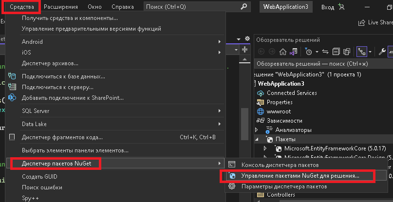
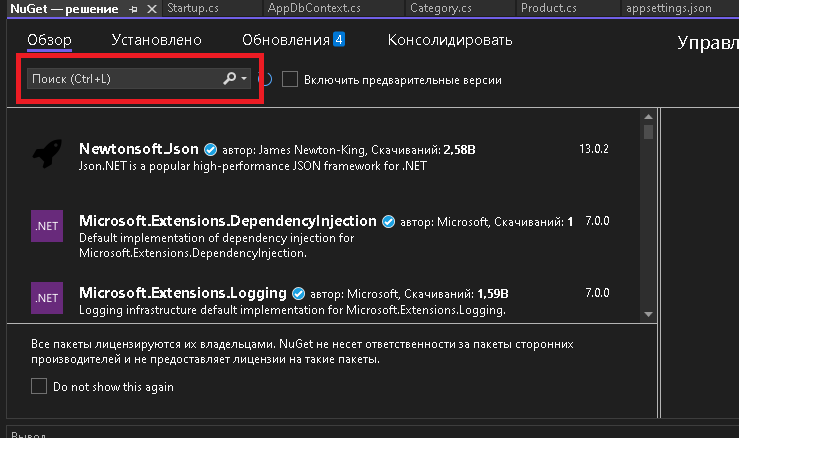
DataBase yaratmaq
-
Yazdığımız kodu SQL-serverdə DataBase çevirmək üçün yazdığımız kodları SQL koda çevirib SQL-serverə göndərməliyik
-
Bunun üçün Tools (Средства) -> NuGet Package Manager (Диспетчер пакетов Nuget) -> Package Manage Console...(Консоль диспетчера пакетов...) daxil olub add-migration yazıb migration-a ad (firstmigraton) verib ENTER basırıq
add-migration firstmigration
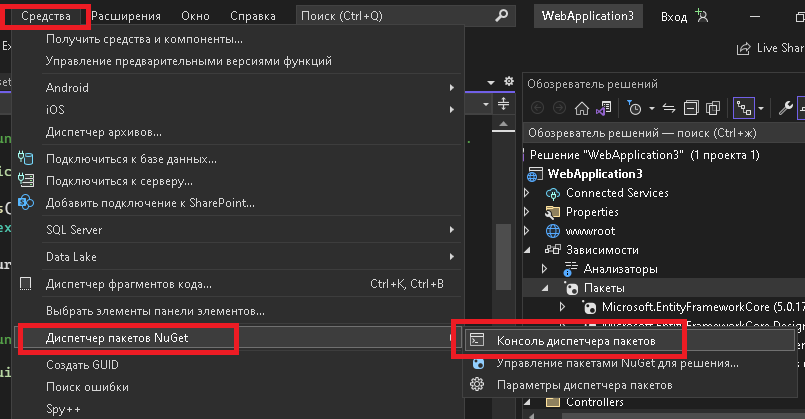
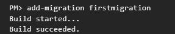
-
Yazdığımız kodu SQL-ə çevirilməsini Migrations papkasında migration-u seçib SQL koda baxa bilərik
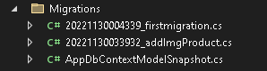
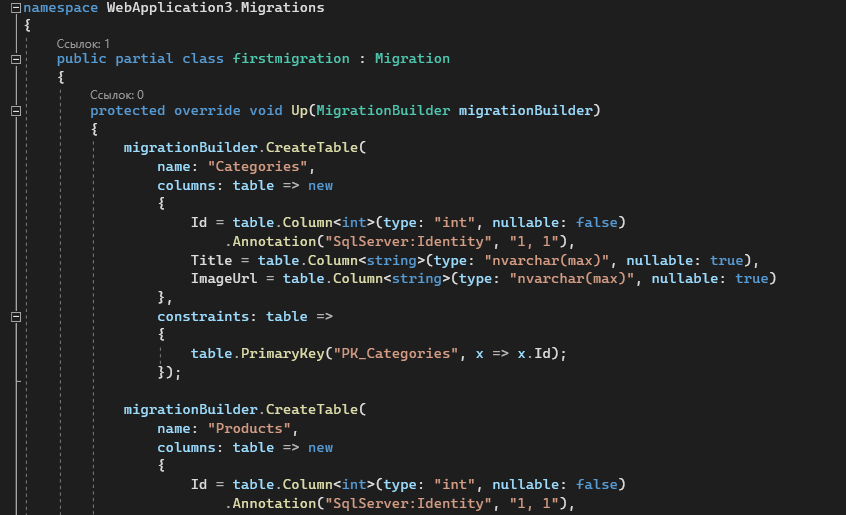
-
SQL kodu isə göndərmək üçün UPDATE-DATABASE eliyirik
update-databse
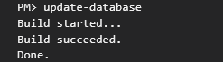
-
Artıq yazdığımız kod SQL-Serverdə ZayDb adənda DataBase yaratdı
Database-in C# da yaradəlmasını bilmək üçün Table-lardə __EFMigrationsHistory adlı table-dan bilmək olar

Sayta Database-dən Data-ları cağırmaq
-
İlk öncə Category və Product table-ları ikisini birdən sayta göndərmək üçün ViewModels papkası, içində CategoryProductsVM classı yaradıb ViewImports.cshtml-də tanıdırıq
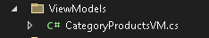
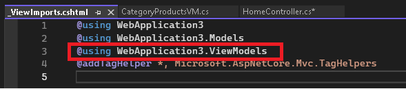
-
CategoryProductsVM classında bu kodu yazırıq
public ListCategories { get; set; }
public ListProducts { get; set; }
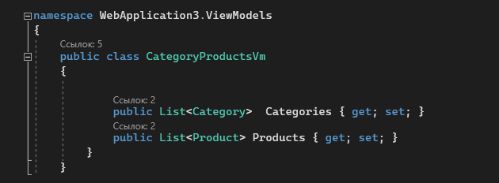
-
Sonra Category və Product table-ları SQL-Serverde dolduraq
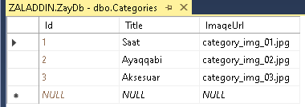 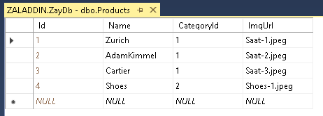
-
Data-ları doldurduqdan sonra Index-dən cağıracayıq. Bunun üçün əvvəlcə Controller-də Contexti qoşaq və using edək
private readonly AppDbContext dbContext;
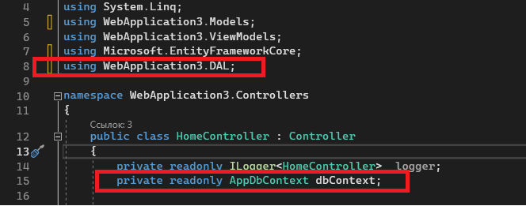
-
dbContexti qoşduqdan sonra Constructor-da qoşaq. İşarələnmiş kodu yazaq
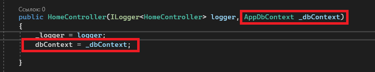
-
Və Actionda müraciət edib View-a göndərək
var categories = dbContext.Categories.Include(x => x.Products).ToList();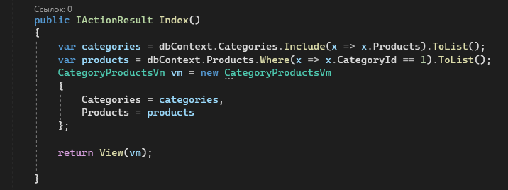
var products = dbContext.Products.Where(x => x.CategoryId == 1).ToList();
CategoryProductsVm vm = new CategoryProductsVm
{
Categories = categories,
Products = products
};
return View(vm);
-
Sayt-da göstərilməsi üçün Index.cshtml açıb Category-ləri və Product-ları dolduraq. Və CategoryProductsVM burdada tanıdaq
@model CategoryProductsVm
@foreach (var item in Model.Categories) { }
@foreach(var item in Model.Products) {}Gym Weight@item.Category.Title)
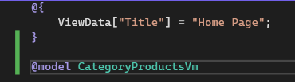
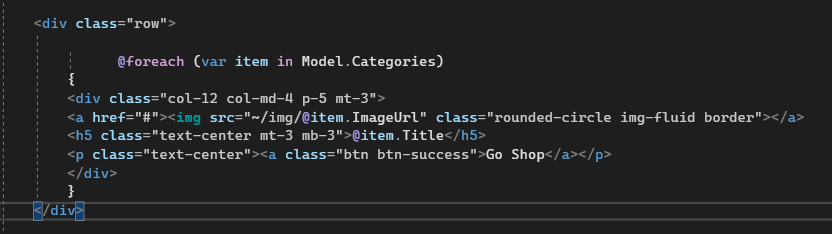
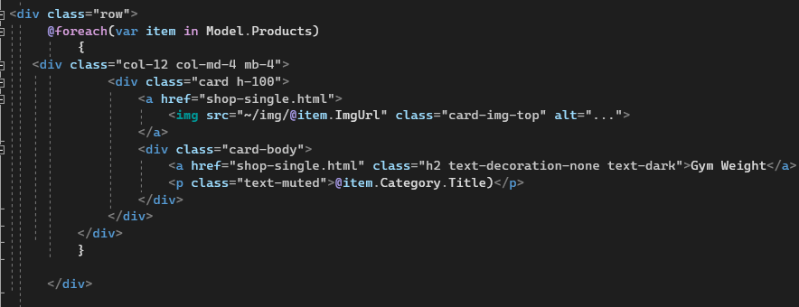